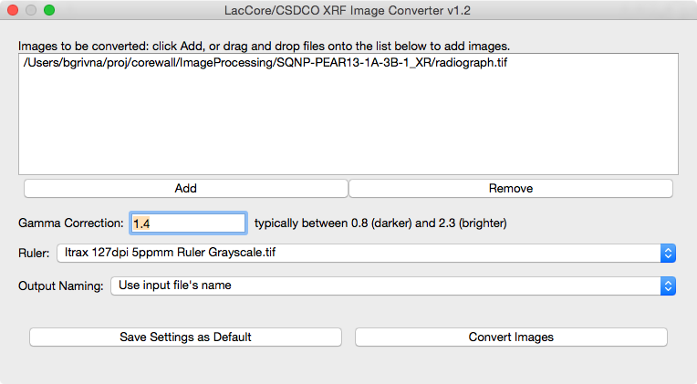

March 14, 2019
version 1.1
LacCore/CSDCO XRF Converter is a software utility developed by LacCore/CSDCO to prepare core imagery generated by XRF and X-radiographic core scanners for viewing and use in applications like the visualization tool Corelyzer.
The Converter was developed to replace a collection of Photoshop scripts. It is free, available for Windows and macOS/OSX, written in Python, and leans heavily on the Pillow imaging library. Source code is available on GitHub.
For each horizontally-oriented radiograph image processed, the Converter:
The Converter expects that:
It is important to ensure the resolution of the ruler image matches the resolution of the image(s) being processed or the scale will be inaccurate. The application provides a single grayscale ruler image with resolution 508 dots per inch (DPI), or 20 pixels per millimeter (ppmm).
If your core imagery isn't 508 DPI/20 ppmm, you'll need to provide your own ruler image(s). We created our ruler image by scanning a physical ruler on our linescan imager, and suggest you do the same. Alternately, you can use an image editing tool like Photoshop or (free and open-source) GIMP to resize the provided ruler as needed. For instance, if you need a 254 DPI ruler, resize the provided 508 DPI ruler to 50% (508 dots/inch * 0.5 = 254 dots/inch) of its original size.
To make your ruler images available in the Converter, place them in the "rulers" folder alongside the Converter application, then restart the Converter if it's currently running. Your ruler images should now be available in the Ruler dropdown menu.
There is no limit to the number of ruler images that can be added.
The application consists of a single window.

First, add one or more radiograph images to be processed. Images can be selected via the "Add" button, or by dragging and dropping files into the "Images to be converted" list. Next, specify desired processing options. A description of each option follows:
Gamma Correction
A gamma correction value greater than zero. Smaller values result in darker imagery, larger values brighter. We suggest starting with a value around 1.5 and making adjustments based on your desired brightness and contrast. Typically, gamma correction values below 0.8 produce a dark, insufficiently-contrasting image. Similarly, values above 2.3 usually produce a bright, insufficiently-contrasting image. But of course you're free to use any value that yields satisfactory results!
Ruler
A list of the ruler images in the "rulers" directory. The selected ruler image will be added to the bottom of the core image.
Output Naming
Output images can be named in one of two ways:
Save Settings as Default
You can save the current set of options by clicking the "Save Settings as Default" button. They will be restored the next time the Converter is launched.
Now that your options are set, you can process your images! To do so, click the "Convert Images" button. A progress bar will be displayed during conversion, and a message will be displayed when conversion is complete.
Output File Location
The Converter creates a directory called "radiograph" alongside the application where it places output files.